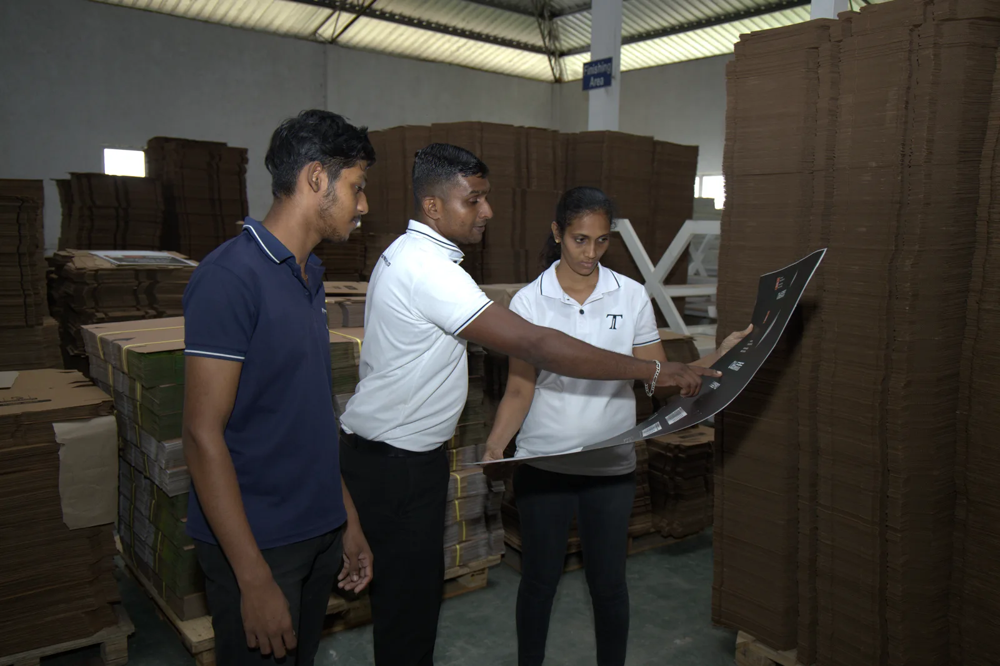

QUALITY & COMPLIANCE
Quality Packaging
Starts with the Details
Define the materials, structure, dimensions and print requirements for packaging that suits your product.

OUR QUALITY APPROACH
A Structured Quality Conversation
Agree what matters before production: the board, fit, artwork and functional requirements. Use the following checkpoints to build your packaging specification with our team.
Test methods, tolerances and acceptance criteria are confirmed for your project; no particular test or inspection programme is assumed.
CERTIFICATIONS & DOCUMENTATION
Confirm the Standards
for Your Project
Request the current documents relevant to your packaging, materials and intended use.
Certification Documents+
The company website describes Techno Industries as ISO-certified. Request current certificates and confirm the covered entity, site, scope and validity. Current documents have not been verified for publication here.
Ask our teamMaterial Suitability+
Share product-contact, moisture, handling or other material requirements. Ask for documentation applicable to the selected material and intended use.
Ask our teamAgreed Quality Criteria+
Discuss the dimensions, artwork, structural requirements and acceptance criteria for your order. Confirm any required test methods and supporting results directly.
Ask our teamResponsible Choices+
Discuss material selection and resource considerations with the team. Request product-specific evidence for any environmental claim required by your project.
Ask our teamCertification and compliance documents are available to request from the team. No certification badge, test result or environmental certification is presented as verified on this page.
Packaging Around Your Requirements
Share your product, quantity and quality requirements with our team.